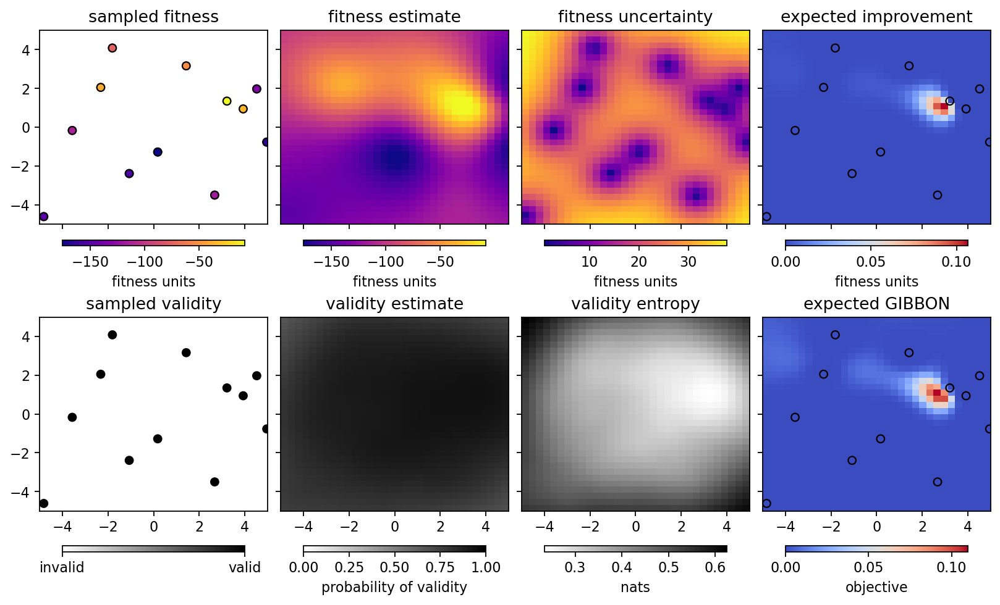

Running the optimizer with Himmelblau’s function¶
[1]:
%run -i ../../../examples/prepare_bluesky.py
import bloptools
from bloptools.experiments.tests import Himmelblau
himmelblau = Himmelblau()
[2]:
boa = bloptools.bo.BayesianOptimizationAgent(
dofs=himmelblau.dofs,
dets=[],
bounds=himmelblau.bounds,
db=db,
experiment=himmelblau,
)
RE(boa.initialize(init_scheme='quasi-random', n_init=8))
learning with strategy "quasi-random" ...
Transient Scan ID: 1 Time: 2023-04-25 16:01:29
Persistent Unique Scan ID: 'a030b5bf-520b-4024-85fa-59d12f09d922'
New stream: 'primary'
+-----------+------------+------------+------------+
| seq_num | time | x1 | x2 |
+-----------+------------+------------+------------+
| 1 | 16:01:29.4 | -0.482 | 0.493 |
| 2 | 16:01:29.4 | -4.232 | 2.715 |
| 3 | 16:01:29.4 | -2.982 | -1.729 |
| 4 | 16:01:29.4 | -1.732 | -3.952 |
| 5 | 16:01:29.4 | 0.768 | -2.841 |
| 6 | 16:01:29.4 | 3.268 | -0.618 |
| 7 | 16:01:29.4 | 2.018 | 1.604 |
| 8 | 16:01:29.4 | 4.518 | 3.826 |
+-----------+------------+------------+------------+
generator list_scan ['a030b5bf'] (scan num: 1)
x1 x2 fitness
0 -0.481887 0.492783 -157.979533
1 -4.231887 2.715005 -107.523373
2 -2.981887 -1.729439 -63.601700
3 -1.731887 -3.951661 -190.241671
4 0.768113 -2.840550 -178.951110
5 3.268113 -0.618328 -12.098935
6 2.018113 1.603894 -34.143041
7 4.518113 3.826116 -323.082876
[2]:
('a030b5bf-520b-4024-85fa-59d12f09d922',)
We initialized the GP with the “quasi-random” strategy, as it doesn’t require any prior data. We can view the state of the optimizer:
[3]:
boa.plot_state(gridded=True)

Now let’s try the “EI” strategy to sample where we expect the largest improvement in the fitness:
[4]:
RE(boa.learn(strategy='eI', n_iter=1, n_per_iter=4))
boa.plot_state(gridded=True)
learning with strategy "eI" ...
Transient Scan ID: 2 Time: 2023-04-25 16:01:36
Persistent Unique Scan ID: 'da89955e-c477-421a-8216-d5b0eeec4cc6'
New stream: 'primary'
+-----------+------------+------------+------------+
| seq_num | time | x1 | x2 |
+-----------+------------+------------+------------+
| 1 | 16:01:36.3 | 2.525 | 0.321 |
| 2 | 16:01:36.3 | 3.366 | -0.290 |
| 3 | 16:01:36.3 | 4.726 | -1.926 |
| 4 | 16:01:36.3 | -4.869 | -1.467 |
+-----------+------------+------------+------------+
generator list_scan ['da89955e'] (scan num: 2)
x1 x2 fitness
8 2.525053 0.320529 -37.637001
9 3.366179 -0.290299 -12.600956
10 4.725844 -1.926476 -90.559484
11 -4.869003 -1.466569 -220.794547

Let’s learn a bit more, using the “GIBBON” framework to investigate points that are likely to tell us about the optimum. Running two iterations with four points per iteration:
[5]:
RE(boa.learn(strategy='eGIBBON', n_iter=4, n_per_iter=4))
boa.plot_state(gridded=True)
learning with strategy "eGIBBON" ...
Transient Scan ID: 3 Time: 2023-04-25 16:01:43
Persistent Unique Scan ID: '0d76b69b-40ac-46d1-ba12-e9d1662f61c6'
New stream: 'primary'
+-----------+------------+------------+------------+
| seq_num | time | x1 | x2 |
+-----------+------------+------------+------------+
| 1 | 16:01:43.4 | -4.648 | 4.754 |
| 2 | 16:01:43.4 | -0.755 | 4.891 |
| 3 | 16:01:43.4 | 4.970 | 0.087 |
| 4 | 16:01:43.4 | 4.886 | -4.964 |
+-----------+------------+------------+------------+
generator list_scan ['0d76b69b'] (scan num: 3)
x1 x2 fitness
12 -4.647937 4.753567 -355.702879
13 -0.755147 4.890546 -291.902538
14 4.970446 0.086775 -194.310834
15 4.886459 -4.964248 -570.230032
Transient Scan ID: 4 Time: 2023-04-25 16:01:46
Persistent Unique Scan ID: '640fa1d5-0ab0-43f9-a5ac-1ee09630136e'
New stream: 'primary'
+-----------+------------+------------+------------+
| seq_num | time | x1 | x2 |
+-----------+------------+------------+------------+
| 1 | 16:01:46.8 | 2.039 | -0.893 |
| 2 | 16:01:46.8 | -3.343 | 0.520 |
| 3 | 16:01:46.8 | -1.214 | -1.770 |
| 4 | 16:01:46.8 | -4.813 | -4.909 |
+-----------+------------+------------+------------+
generator list_scan ['640fa1d5'] (scan num: 4)
x1 x2 fitness
16 2.038793 -0.892907 -77.187514
17 -3.342925 0.520329 -101.932555
18 -1.213923 -1.770207 -153.422484
19 -4.813038 -4.909343 -203.659427
Transient Scan ID: 5 Time: 2023-04-25 16:01:50
Persistent Unique Scan ID: '0968f413-75fa-4d96-9276-547df9530bba'
New stream: 'primary'
+-----------+------------+------------+------------+
| seq_num | time | x1 | x2 |
+-----------+------------+------------+------------+
| 1 | 16:01:50.2 | 3.591 | -1.196 |
| 2 | 16:01:50.2 | 2.983 | 1.282 |
| 3 | 16:01:50.2 | 1.382 | 0.776 |
| 4 | 16:01:50.2 | 0.520 | 2.394 |
+-----------+------------+------------+------------+
generator list_scan ['0968f413'] (scan num: 5)
x1 x2 fitness
20 3.591270 -1.196380 -4.401311
21 2.983402 1.281766 -6.302711
22 1.381510 0.775601 -94.322641
23 0.520125 2.393734 -70.046872
Transient Scan ID: 6 Time: 2023-04-25 16:01:53
Persistent Unique Scan ID: '3bf5e51a-e447-4cc1-b846-a7c96b7040f3'
New stream: 'primary'
+-----------+------------+------------+------------+
| seq_num | time | x1 | x2 |
+-----------+------------+------------+------------+
| 1 | 16:01:53.8 | -2.308 | 2.055 |
| 2 | 16:01:53.8 | 2.739 | 2.113 |
| 3 | 16:01:53.8 | 3.136 | 0.792 |
| 4 | 16:01:53.8 | 3.004 | -1.663 |
+-----------+------------+------------+------------+
generator list_scan ['3bf5e51a'] (scan num: 6)
x1 x2 fitness
24 -2.307779 2.054683 -38.968567
25 2.739175 2.112939 -1.956896
26 3.135883 0.791822 -10.619239
27 3.003539 -1.662816 -14.777621

Eventually, we reach a point of saturation where no more improvement takes place:
[6]:
RE(boa.learn(strategy='eGIBBON', n_iter=8, n_per_iter=4))
boa.plot_state(gridded=True)
learning with strategy "eGIBBON" ...
Transient Scan ID: 7 Time: 2023-04-25 16:02:00
Persistent Unique Scan ID: '6f3810ae-f683-4bfa-861f-5f662302be7a'
New stream: 'primary'
+-----------+------------+------------+------------+
| seq_num | time | x1 | x2 |
+-----------+------------+------------+------------+
| 1 | 16:02:00.9 | 1.943 | 3.049 |
| 2 | 16:02:00.9 | -0.958 | 2.255 |
| 3 | 16:02:00.9 | -2.816 | 2.912 |
| 4 | 16:02:00.9 | -4.958 | 1.500 |
+-----------+------------+------------+------------+
generator list_scan ['6f3810ae'] (scan num: 7)
x1 x2 fitness
28 1.942943 3.048822 -35.403094
29 -0.957795 2.254980 -69.525425
30 -2.816368 2.912468 -1.803496
31 -4.958420 1.499766 -321.845397
Transient Scan ID: 8 Time: 2023-04-25 16:02:04
Persistent Unique Scan ID: '57a887db-b2f6-436f-8d64-90dd607cdf85'
New stream: 'primary'
+-----------+------------+------------+------------+
| seq_num | time | x1 | x2 |
+-----------+------------+------------+------------+
| 1 | 16:02:04.7 | -3.180 | 2.244 |
| 2 | 16:02:04.7 | -2.325 | 2.934 |
| 3 | 16:02:04.7 | 2.356 | 2.391 |
| 4 | 16:02:04.7 | -2.387 | -0.199 |
+-----------+------------+------------+------------+
generator list_scan ['57a887db'] (scan num: 8)
x1 x2 fitness
32 -3.179802 2.244063 -28.297151
33 -2.324732 2.933767 -7.600621
34 2.355785 2.391456 -10.511674
35 -2.386921 -0.198974 -117.640004
Transient Scan ID: 9 Time: 2023-04-25 16:02:08
Persistent Unique Scan ID: 'da90f311-de28-4b46-bc63-e4c34c8d692d'
New stream: 'primary'
+-----------+------------+------------+------------+
| seq_num | time | x1 | x2 |
+-----------+------------+------------+------------+
| 1 | 16:02:08.5 | -2.810 | 2.651 |
| 2 | 16:02:08.5 | 1.945 | 4.952 |
| 3 | 16:02:08.5 | 2.633 | 1.850 |
| 4 | 16:02:08.5 | 3.718 | -1.674 |
+-----------+------------+------------+------------+
generator list_scan ['da90f311'] (scan num: 9)
x1 x2 fitness
36 -2.809596 2.650948 -7.947149
37 1.944916 4.951752 -384.009908
38 2.633260 1.849620 -5.806334
39 3.718188 -1.674266 -1.553105
Transient Scan ID: 10 Time: 2023-04-25 16:02:12
Persistent Unique Scan ID: '80849435-7c44-4914-832e-c5eb517d0410'
New stream: 'primary'
+-----------+------------+------------+------------+
| seq_num | time | x1 | x2 |
+-----------+------------+------------+------------+
| 1 | 16:02:12.1 | 3.404 | -1.473 |
| 2 | 16:02:12.1 | 3.199 | 1.787 |
| 3 | 16:02:12.1 | 1.587 | 2.459 |
| 4 | 16:02:12.1 | 0.248 | -4.970 |
+-----------+------------+------------+------------+
generator list_scan ['80849435'] (scan num: 10)
x1 x2 fitness
40 3.404005 -1.472767 -2.820331
41 3.198634 1.786967 -1.406591
42 1.586840 2.458623 -36.679344
43 0.248323 -4.969738 -575.148074
Transient Scan ID: 11 Time: 2023-04-25 16:02:15
Persistent Unique Scan ID: 'e0fdc403-794f-4ced-92b0-855eb05b4b77'
New stream: 'primary'
+-----------+------------+------------+------------+
| seq_num | time | x1 | x2 |
+-----------+------------+------------+------------+
| 1 | 16:02:15.8 | -3.155 | -3.118 |
| 2 | 16:02:15.8 | -2.661 | 4.365 |
| 3 | 16:02:15.8 | 2.986 | 2.064 |
| 4 | 16:02:15.8 | 3.491 | 1.157 |
+-----------+------------+------------+------------+
generator list_scan ['e0fdc403'] (scan num: 11)
x1 x2 fitness
44 -3.154932 -3.118458 -17.531108
45 -2.660774 4.364706 -88.367450
46 2.986459 2.064181 -0.061444
47 3.490534 1.157278 -10.190418
Transient Scan ID: 12 Time: 2023-04-25 16:02:19
Persistent Unique Scan ID: 'ac8ee2fb-4784-421b-afb7-2b935ed45cd4'
New stream: 'primary'
+-----------+------------+------------+------------+
| seq_num | time | x1 | x2 |
+-----------+------------+------------+------------+
| 1 | 16:02:19.5 | 3.159 | -2.496 |
| 2 | 16:02:19.5 | -2.569 | -2.716 |
| 3 | 16:02:19.5 | -3.792 | -2.867 |
| 4 | 16:02:19.5 | -3.062 | -4.437 |
+-----------+------------+------------+------------+
generator list_scan ['ac8ee2fb'] (scan num: 12)
x1 x2 fitness
48 3.159440 -2.495663 -18.046848
49 -2.569193 -2.715814 -55.435718
50 -3.791883 -2.867086 -6.875076
51 -3.061526 -4.436643 -129.356646
Transient Scan ID: 13 Time: 2023-04-25 16:02:23
Persistent Unique Scan ID: 'a1aa91b2-170e-40fd-9f8f-32318d6f4c67'
New stream: 'primary'
+-----------+------------+------------+------------+
| seq_num | time | x1 | x2 |
+-----------+------------+------------+------------+
| 1 | 16:02:23.3 | -3.800 | -3.336 |
| 2 | 16:02:23.3 | -3.495 | -2.547 |
| 3 | 16:02:23.4 | -2.618 | 3.432 |
| 4 | 16:02:23.4 | 3.346 | -1.909 |
+-----------+------------+------------+------------+
generator list_scan ['a1aa91b2'] (scan num: 13)
x1 x2 fitness
52 -3.800245 -3.336086 -0.119579
53 -3.494575 -2.547089 -17.837658
54 -2.618078 3.431758 -5.170439
55 3.346386 -1.908700 -2.925583
Transient Scan ID: 14 Time: 2023-04-25 16:02:27
Persistent Unique Scan ID: '18a3757e-0f9d-47b6-9d5c-79b4f0452c24'
New stream: 'primary'
+-----------+------------+------------+------------+
| seq_num | time | x1 | x2 |
+-----------+------------+------------+------------+
| 1 | 16:02:27.2 | 2.326 | -2.238 |
| 2 | 16:02:27.2 | 4.968 | 1.822 |
| 3 | 16:02:27.2 | -3.085 | 3.382 |
| 4 | 16:02:27.2 | -4.265 | -3.265 |
+-----------+------------+------------+------------+
generator list_scan ['18a3757e'] (scan num: 14)
x1 x2 fitness
56 2.325913 -2.237700 -61.385976
57 4.968004 1.821633 -241.988203
58 -3.084515 3.381589 -5.418335
59 -4.264983 -3.264530 -15.779373